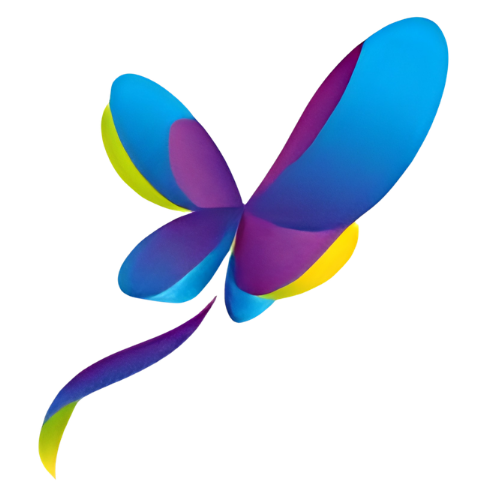

size='sm' · variant='full'
h=24px · w=auto
6 combinations · 3 sizes × 2 variants · assets reales brand Vitalia
Asset light: /brand/vitalia-logo.png · Asset dark: /brand/vitalia-logo-dark.png (D6 pending entrega Chris)
Asset (ambos modes): /brand/vitalia-ico.png — libélula multicolor funciona light + dark sin variant

mockups/assets/ (mismo binary que va a public/brand/ en frontend)<Image> de Next.js con priority (TopBar siempre visible above-fold)auto preserva aspect ratio del asset original; height fija per size<Image> con CSS block dark:hidden / hidden dark:block